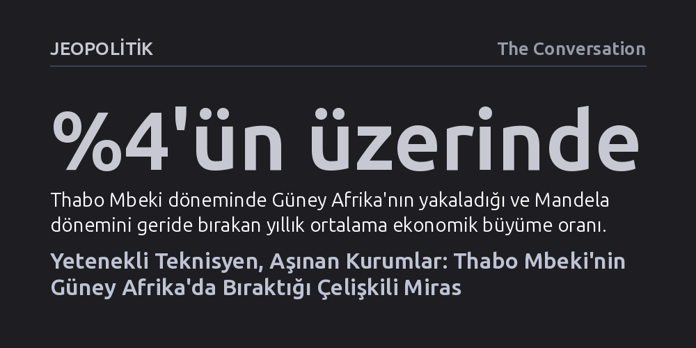

JEOPOLITIK · The Conversation · 2026-10-10
Thabo Mbeki'nin mali istikrar ve dış politikadaki başarıları, iktidar partisini devlete eklemleyip gücü merkezileştirmesinin kurumlarda yarattığı tahribatı gizleyemedi. Bu otoriter ve kayırmacı yapı, sonraki dönemde devlet kaynaklarının sistematik olarak yağmalanmasına zemin hazırladı.
Güçlü ekonomik büyüme ve idari yetkinliğin, partizan kadrolaşma ve gayriresmî çıkar ağlarıyla kurumsal omurgası kırılmış bir devleti çöküşten kurtarmaya yetmeyeceğini gösteriyor.

Liderlerin performansını yalnızca ekonomik büyüme rakamları ya da kişisel karizmaları üzerinden ölçmek, iktidarın gerçek işleyiş mekanizmalarını gözden kaçırır. Güney Afrika'da Nelson Mandela'nın ardından 1999-2008 yılları arasında devlet başkanlığı koltuğuna oturan Thabo Mbeki dönemi, bu yanılsamanın en somut örneğidir. Mbeki, selefinin küresel ahlaki otoritesinin aksine, kamu politikalarına odaklanan ve devleti rasyonel bir teknisyen titizliğiyle yöneten bir figür olarak öne çıktı.
Başkanlık makamında stratejik planlamayı merkezileştiren Mbeki, çağdaş bir hazine mekanizması kurarak ülkenin mali dengelerini sağlamlaştırdı. Uygun küresel konjonktürün de yardımıyla büyüme oranını Mandela dönemindeki yüzde 3 seviyesinden yüzde 4'ün üzerine taşıdı; kamu borcunu düşürürken altyapı yatırımlarını ve yoksullara yönelik sosyal yardımları kayda değer ölçüde genişletti. Ancak hükümeti yönetme konusundaki bu teknik yetkinlik, ulusu birleştirme ve kritik krizlerde ahlaki liderlik sergileme sınavında büyük bir kırılmaya uğradı.
Mbeki yönetiminin kurumsal kapasitede yarattığı en derin yara, iktidardaki Afrika Ulusal Kongresi (ANC) ile devlet aygıtı arasındaki ayrımın giderek silinmesiydi. Sürgün yıllarından gelen bir hareket olarak ANC, iktidara geldikten sonra bir kurtuluş örgütünden devlet partisine dönüşmekte zorlandı. 1997'deki kongrede anayasal demokrasiyi nihai bir amaçtan ziyade 'ulusal demokratik devrim' yolunda bir geçiş aşaması olarak gören strateji benimsendi.
Bu stratejinin fiili aracı, Mbeki'nin zihinsel imzasını taşıyan partizan kadrolaşma politikası oldu. 'Kadro konuşlandırma' adı verilen bu uygulamayla, bakanlıklardan belediyelere ve kamu iktisadi teşekküllerine kadar kritik tüm kademelere partiye sadık isimler yerleştirildi. Kamu çalışanlarının mesleki tarafsızlık ve liyakat yerine parti yöneticilerine hesap verir hale gelmesi, devletin kurumsal kapasitesini felç etti. Mbeki'nin politika üretimini başkanlık bürosunda toplayıp parti içi muhalefeti bastırma tutumu ise uzun vadede kamu hesap verebilirliğini tüketti.
Mbeki'nin merkezileştirici ve bilimsel mutabakatı dışlayan yönetim tarzı, ülkenin gördüğü en büyük insani trajedilerden birine yol açtı. HIV/AIDS salgını sırasında yerleşik bilimsel görüşleri reddedip antiretroviral ilaçların güvenliğini sorgulayan Mbeki, tedavinin kamuya sunulmasını yıllarca erteledi. Yapılan araştırmalar, bu hayati ilaçlara vaktinde erişim sağlanabilseydi 300 binden fazla insanın hayatının kurtarılabileceğini ortaya koyuyor. İçerideki protestolara ve uluslararası tepkilere rağmen geri adım atmayan bu tutum, devlet başkanlığı rolünün en dramatik iflasıydı.
Dış politikada ise Afrika Birliği'nin kurulması ve Afrika'nın küresel ekonomiye entegrasyonu gibi pan-Afrikanist vizyonlar takdir toplasa da bölgesel gerçekler ağır faturalar çıkardı. Komşu Zimbabve'de Robert Mugabe rejiminin uyguladığı siyasi baskı ve ekonomik çöküş karşısında Mbeki, 'sessiz diplomasi' adı altında eleştiriden kaçınan bir tavır sergiledi. Hileli seçimlerin onaylanması ve baskıcı yönetimin himaye edilmesi, Zimbabve ekonomisinin çöküşünü hızlandırdı; bu çöküşün sonucunda Güney Afrika'ya göç etmek zorunda kalan milyonlarca insan, Mbeki'den sonraki dönemde patlak veren kanlı yabancı düşmanlığının zeminini hazırladı.
Görünürde yasalara uygun işleyen yetkiler, Mbeki döneminde gayriresmî nüfuz ağlarıyla iç içe geçti. Anayasanın başkana tanıdığı geniş atama yetkileri, yargıdan vergi idaresine ve polis teşkilatına kadar stratejik kurumları sadakat esasına göre doldurmak için kullanıldı. Artan kampanya harcamaları ise hükümet üyelerine erişimin bağış karşılığında satıldığı etik dışı bir finansman modelini doğurdu.
Apartheid döneminin ekonomik adaletsizliklerini gidermek için tasarlanan siyahilerin ekonomik güçlendirilmesi hamlesi de amorf bir rant dağıtım mekanizmasına dönüştü. Büyük sermaye grupları, hükümet üzerindeki nüfuzlarını korumak için hisselerini iktidarla bağlantılı siyasilere devrederken, ANC kendi yatırım şirketi üzerinden milyarlarca randlık kamu ihaleleri almaya başladı. Mbeki'nin şahsı doğrudan bir yolsuzluk davasıyla anılmasa da onun inşa ettiği partizan kadro yapısı ve kayıt dışı sermaye ilişkileri, halefi Jacob Zuma döneminde devlet kurumlarının organize bir şekilde soyulup ele geçirilmesine zemin hazırlayan mimariyi oluşturdu.